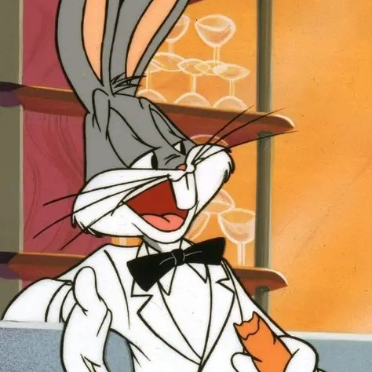
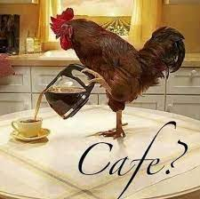

Tabela de coisas importantes
| Categoria |
Coisa |
Descrição |
Imagem |
| Personagem |
Pernalonga |
- Coelho
- Inteligente
- Sagaz
- "Que que há velhinho"
|
 |
| Reigen Arataka |
- Humano
- Inteligente
- Sagaz
- "A verdade por trás do charme de alguém é a bondade.
Torne-se uma pessoa boa. Isso é tudo"
|
 |
| Ciência |
Café |
- Bebida
- Fórmula química da cafeína C8H10N4O2
- Efeito: energia para seu dia
- "A vida só começa depois do café"
|
 |
| Café |
- Distorção gravitacional do espaço tempo
- Elemento tão massivo capaz de gerar gravidade
suficiente para não deixar escapar nem mesmo a luz
- Efeito: se pular dentro morre eternamente
- "S = Akc3 4hG
onde A é a área de horizonte de eventos do buraco negro,
h = h/2π, k é a constante de Boltzmann e
G é a constante gravitacional de Newton."
|
|